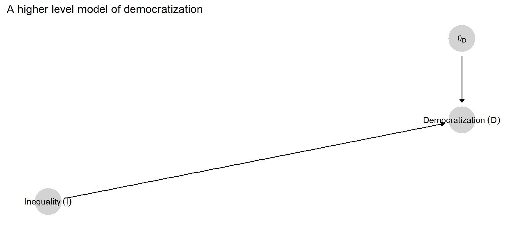
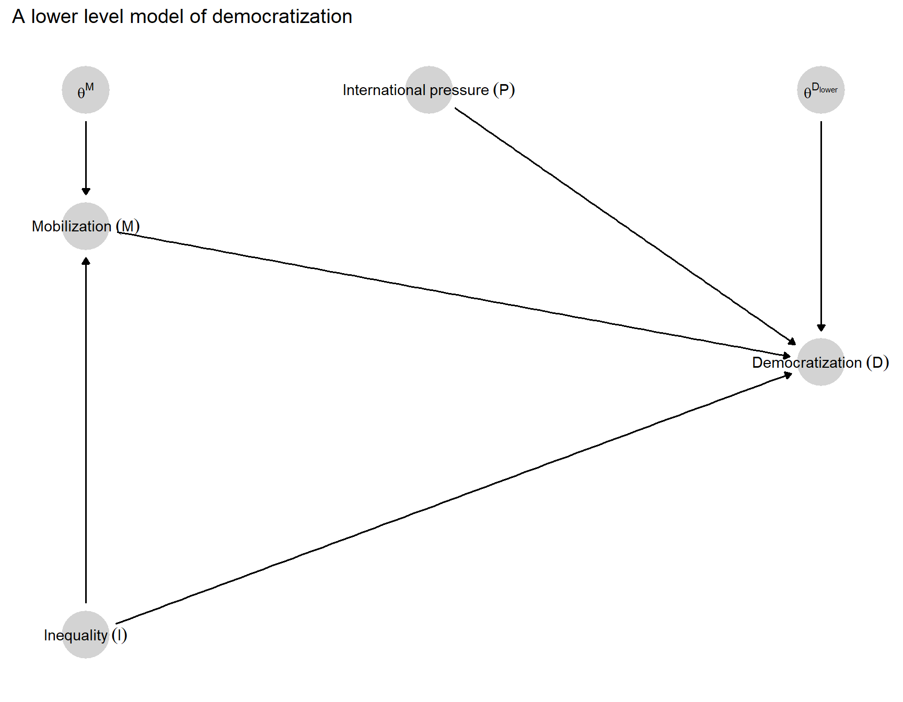
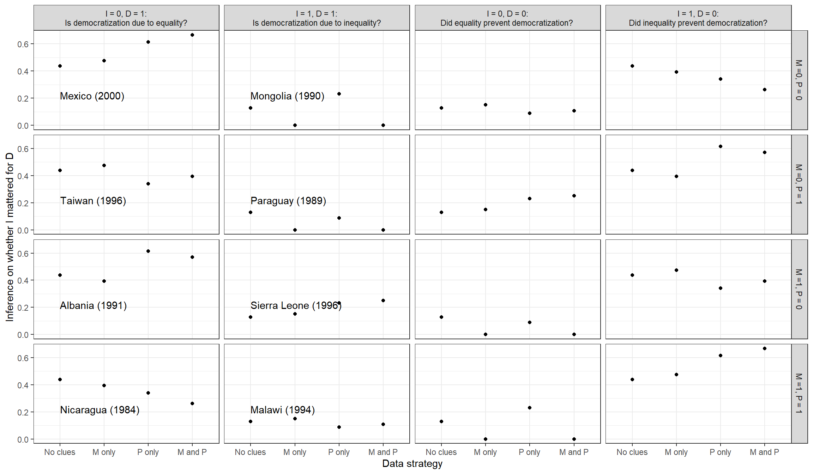
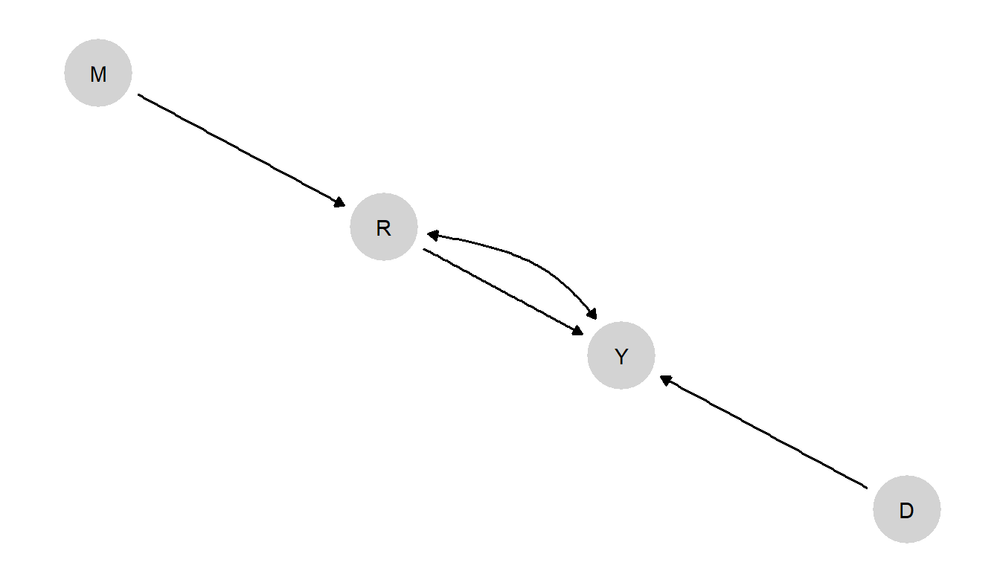
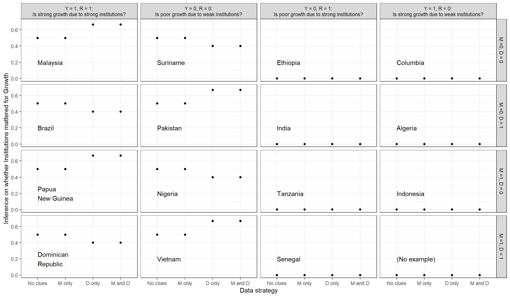

8 Process Tracing Applications
Chapter summary
We apply the causal-model-based approach to process tracing to two major substantive issues in comparative politics: the relationship between inequality and democratization and the relationship between institutions and economic growth. Drawing on case-level data, we use restrictions on causal types together with flat priors to draw inferences about a range of causal queries. The applications are both very simple, but they are sufficiently complex to illustrate key features of process tracing with causal models: The different types of learning that can be gleaned from evidence on moderators and mediators, the dependence of inference from some clues on the values of other clues, and the scope for learning from more distal historical data when researchers have beliefs over confounding processes.
In this chapter, we illustrate how causal-model-based process-tracing works using two substantive applications that have been of central interest to students of comparative politics for decades: the causes of democratization and the determinants of economic growth. In both cases, we develop simple models to demonstrate the logic of process-tracing with causal models. In Chapter 10 we push the analysis further, illustrating the integration of process tracing with cross-case correlational analysis. The key difference is that, in this chapter, we assume—consistent with the process-tracing approach outlined in Chapter 7—that the researcher comes to a case with a theoretical model in hand, including a set of beliefs about the shares of nodal types in the population. In Chapter 10, as we return to the same case-level queries, we use models that have been directly informed by data from that broader population of cases.
8.1 Inequality and Democratization
8.1.1 The Debate
Sociologists, economists, and political scientists have long theorized and empirically examined the relationship between inequality and democracy (e.g., Dahl (1973), Bollen and Jackman (1985), Acemoglu and Robinson (2005), Boix (2003), Ansell and Samuels (2014)). In recent years, the work of Boix (2003), Acemoglu and Robinson (2005), and Ansell and Samuels (2014) represent major theoretical advances in specifying when and how inequality might generate transitions to democracy (as well as its persistence, which we bracket here). The first and third of these books also provide large-n cross-national and historical tests of their theories’ key correlational predictions. Haggard and Kaufman (2012), moreover, derive causal process observations from a large number of “Third Wave” cases of democratization in order to examine these theories’ claims about the centrality of distributional issues to regime change. We provide a very condensed summary of the core logic of Boix (2003) and Acemoglu and Robinson (2005) before seeking to translate that logic into a causal model for the purposes of process tracing, using a transformed version of Haggard and Kaufman’s causal-process data.
We briefly summarize the core logics of and differences among these three sets of arguments here, bracketing many of their moving parts to focus on the basic theorized relationship between inequality and democracy. Both Boix’s and Acemoglu and Robinson’s theories operate within a Meltzer-Richard (Meltzer and Richard (1981)) framework in which, in a democracy, the median voter sets the level of taxation-and-transfer and, since mean income is higher than the median income, benefits from and votes for a positive tax rate, implying redistribution from rich to poor. The poorer the median voter, the more redistribution they will prefer. Democracy, with its poorer median voter, thus implies greater redistribution than (right-wing) authoritarianism—a better material position for the poor at the expense of the rich elite. Thus, in each of these approaches, struggles over political regimes are conflicts over the distribution of material resources.
In Boix’s model, the poor generally prefer democracy for its material benefits. When the poor mobilize to demand regime change, the rich face a choice as to whether to repress or concede, and they are more likely to repress as inequality is higher since, all else equal, they have more to lose from democracy. Thus, with the poor always preferring democracy over right-wing authoritarianism, inequality reduces the prospects for democratization.
In Acemoglu and Robinson’s model, inequality simultaneously affects the expected net gains to democracy for both rich and poor. At low levels of inequality, democracy is relatively unthreatening to the elite, as in Boix, but likewise of little benefit to the poor. Since regime change is costly, the poor do not mobilize for democracy when inequality is low, and democratization does not occur. At high levels of inequality, democracy is of great benefit to the poor but has high expected costs for the elite; thus, democratization does not occur because the elite repress popular demands for regime change. In Acemoglu and Robinson’s model, democracy emerges only when inequality is at middling levels: high enough for the poor to demand it and low enough for the rich to be willing to concede it.
Ansell and Samuels, finally, extend the distributive politics of regime change in three key ways. First, they allow for a two-sector economy, with a governing elite comprising the landed aristocracy and an urban industrial elite excluded from political power under authoritarian institutions. Total inequality in the economy is a function of inequality in the landed sector, inequality in the industrial sector, and the relative size of each. Second, authoritarian (landed) elites can tax the industrial bourgeoisie, thus giving the industrial elite an incentive to seek constraints on autocratic rule. Third, in Ansell and Samuels’ model, rising industrial inequality means a rising industrial elite, generating a larger gap between them and industrial workers, though the industrial masses are richer than the peasantry. A number of results follow, of which we highlight just a couple. Rising land inequality reduces the likelihood of a bourgeois rebellion by giving the landed elite greater repressive capacities and increasing their expected losses under democracy. As industrial inequality rises, however, the industrial elite have more to lose to confiscatory taxation and thus greater incentive to push for partial democracy (in which they have the ability to constrain the government, while the poor remain politically excluded) as well as greater resources with which to mobilize and achieve it. Full democracy, brought on by joint mass and bourgeois rebellion, is most likely as the industrial sector grows in relative size, giving the urban masses more to lose to autocratic expropriation and more resources to mobilize and rebel.
These three theoretical frameworks thus posit rather differing relationships between inequality and democracy. Taking these theoretical logics as forms of background knowledge, we would consider it possible that inequality reduces the likelihood of democracy or that it increases the likelihood of democracy. Yet one feature that is consistent with all three theories is a claim that distributional grievances drive demands for regime change. Moreover, in both Boix and Acemoglu and Robinson, less economically advantaged groups are, all else equal, more likely to demand democracy the worse their relative economic position. Ansell and Samuels’ model, on the other hand, suggests that relative deprivation may cut both ways: While poorer groups may have more to gain from redistribution under democracy, better-off groups have more to fear from confiscatory taxation under autocracy. In all three frameworks, mobilization by groups with material grievances is critical to transitions to democracy: Elites do not voluntarily cede power.
In their qualitative analysis of “Third Wave” democratizations, Haggard and Kaufman point to additional factors, aside from inequality, that may generate transitions. Drawing on previous work on twentieth century democratic transitions (e.g., Huntington (1993), Linz and Stepan (1996)), they pay particular attention to international pressures to democratize and to elite defections.
8.1.2 A Causal Model
We now treat these theories as a form of background knowledge and express them as a causal model. We begin with the structure. Suppose we are interested in the case-level causal effect of inequality on democratization of a previously autocratic political system. Suppose further, to simplify the illustration, that we conceptualize both variables in binary terms: Inequality is either high or low, and democratization either occurs or does not occur. This means that we want to know, for a given case of interest, whether high inequality (as opposed to low inequality) causes democracy to emerge, prevents democracy from emerging, or has no effect (i.e., with democratization either occurring or not occurring independent of inequality). We can represent this query in the simple, high-level causal model shown in Figure 8.1. Here, the question, “What is the causal effect of high inequality on democratization in this case?” is equivalent to asking what the value of \(\theta^D\) is in the case, where the possible values are \(\theta_{00}^D, \theta_{01}^D, \theta_{10}^D\), and \(\theta_{11}^D\). We assume here that the case’s nodal type, \(\theta^D\), is not itself observable, and thus we are in the position of having to make inferences about it.
Drawing on the logic of probative value discussed in Chapter 2, we can already identify possibilities for learning about \(\theta^D\) from the other nodes represented in this high-level graph. Merely observing the level of inequality in a case will tell us nothing since \(I\) is not \(d-\)connected to \(\theta^D\) if we have observed nothing else. On the other hand, only observing the outcome—regime type—in a case can give us information about \(\theta^D\) since \(D\) is \(d-\)connected to \(\theta^D\). For instance, if we observe \(D=1\) (that a case democratized), then we can immediately rule out \(\theta_{00}^D\) as a value of \(\theta^D\) since this type does not permit democratization to occur. Further, conditional on observing \(D\), \(I\) is now \(d-\)connected to \(\theta^D\): In other words, having observed the outcome, we can additionally learn about the case’s type from observing the status of the causal variable. For example, if \(D=1\), then observing \(I=1\) allows us additionally to rule out the value \(\theta_{10}^D\) (a negative causal effect).
Now, observing just \(I\) and \(D\) alone will always leave two nodal types in contention. For instance, seeing \(I=D=1\) (the case had high inequality and democratized) would leave us unsure whether high inequality caused the democratization in this case (\(\theta^D=\theta_{01}^D\)) or the democratization would have happened anyway (\(\theta^D=\theta_{11}^D\)). This is a limitation of \(X, Y\) data that we refer to in Humphreys and Jacobs (2015) as the “fundamental problem of type ambiguity.” Note that this does not mean that we will be left indifferent between the two remaining types. Learning from \(X, Y\) data alone—narrowing the types down to two—can be quite significant, depending on our priors over the distribution of types. For example, if we previously believed that a \(\theta_{00}^D\) type (cases in which democracy will never occur, regardless of inequality) was much more likely than a \(\theta_{11}^D\) type (democracy will always occur, regardless of inequality) and that positive and negative effects of inequality were about equally likely, then ruling out the \(\theta_{00}^D\) and \(\theta_{10}^D\) values for a case will shift us toward the belief that inequality caused democratization in the case. This is because we are ruling out both a negative effect and the type of null effect that we had considered the most likely, leaving a null effect that we consider relatively unlikely.
Nonetheless, we can increase the prospects for learning by theorizing the relationship between inequality and democratization. Given causal logics and empirical findings in the existing literature, we can say more than is contained in Figure 8.1 about the possible structure of the causal linkages between inequality and democratization. Moreover, we can embed this prior knowledge of the possible causal relations in this domain in a lower level model that is consistent with the high-level model that most simply represents our query.
If we were to seek to fully capture them, the models developed by Boix, Acemoglu, and Robinson, and Ansell and Samuels would, each individually, suggest causal graphs with a large number of nodes and edges connecting them. Representing all variables and relationships jointly contained in these three models would take an extremely complex graph. Yet there is no need to go down to the lowest possible level—to generate the most detailed graph—in order to increase our empirical leverage on the problem.
We represent in Figure 8.2 one possible lower level model consistent with our high-level model. Drawing on causal logics in the existing literature, we unpack the nodes in the high-level model in two ways:
We interpose a mediator between inequality and democratization: mobilization (\(M\)) by economically disadvantaged groups expressing material grievances. \(M\) is a function of both \(I\) and its nodal type, \(\theta^M\), which defines its response to \(I\). In inserting this mediator, we have extracted \(\theta^M\) from \(\theta^D\), pulling out that part of \(D\)’s response to \(I\) that depends on \(M\)’s response to \(I\).
We specify a second influence on democratization, international pressure (\(P\)). Like \(\theta^M\), \(P\) has also been extracted from \(\theta^D\); it represents that part of \(D\)’s response to \(I\) that is conditioned by international pressures.

In representing the causal dependencies in this graph, we allow for inequality to have (in the language of mediation analysis) both an “indirect” effect on democratization via mobilization and a “direct” effect. The arrow running directly from \(I\) to \(D\) allows for effects of inequality on democratization beyond any effects running via mobilization of the poor, including effects that might run in the opposite direction. (For instance, it is possible that inequality has a positive effect on democratization via mobilization but a negative effect via any number of processes that are not explicitly specified in the model.) The graph also implies that there is no confounding: Since there is no arrow running from another variable in the graph to \(I\), \(I\) is modeled as a root node.
The lower level graph thus has two exogenous, \(\theta\) nodes that will be relevant to assessing causal effects: \(\theta^M\) and \(\theta^{D_{lower}}\). \(\theta^M\), capturing \(I\)’s effect on \(M\), ranges across the usual four values for a single-cause, binary setup: \(\theta_{00}^M, \theta_{01}^M, \theta_{10}^M\), and \(\theta_{11}^M\).
Node \(\theta^{D_{lower}}\) is considerably more complicated, however, because this node represents \(D\)’s response to three causal variables: \(I\), \(M\), and \(P\). One way to put this is that the values of \(\theta^{D_{lower}}\) indicate how inequality’s direct effect will depend on mobilization (and how mobilization’s effect will depend on inequality), conditional on whether or not there is international pressure. Readers can find this more a complex notation at work within the Causal Queries package but for the sake of readability, we do not use it here in the text.
The result is \(2^8=256\) possible nodal types for \(D\). With four nodal types for \(M\), we thus have 1024 possible combinations of causal effects between named variables in the lower level graph. How do these lower level nodal types map onto the higher level nodal types that are of interest? In other words, which combinations of lower level types represent a positive, negative, or zero causal effect of inequality on democratization? When working with the CausalQueries package, the software figures this out for us automatically once we define our model and our query, but we work through the logic “by hand” here to help convey the intuition.
Ignoring \(P\) for the moment, there are 16 ways that nodal types for \(M\) and nodal types for \(D\) can combine to create positive effects of \(I\) on \(D\). These different types involve different combinations of direct and indirect effects. In Figure 4.5, for a similar model, we can see all 16 types in which there are overall effects, with some types producing direct effects, some indirect effects, and some both.
Another way to think of the different classes of causal types that generate a positive effect of \(I\) on \(D\) is to distinguish among types according to the ways that \(I\) affects \(M\). This gives us three families of causal types: those in which overall effects are due to (or at least not disrupted by) a positive effect of \(I\) on \(M\); those in which overall effects are due to (or not disrupted by) a negative effect of \(I\) on \(M\); and those in which there is no effect of \(I\) on \(M\) at all.
To define a causal effect of \(I\) in this setup, we need to define the “joint effect” of \(I\) and \(M\) as being the effect of changing both variables simultaneously: when we both change \(I\) from 0 to 1 and change \(M\) in the manner in which it is changed by the change in \(I\). Thus, for instance, the joint effect of \(I\) and \(M\) on \(D\) is positive if, when \(I\) has a positive effect on \(M\), changing both \(I\) and \(M\) from \(0\) to \(1\) changes \(D\) from \(0\) to \(1\). We can likewise refer to the joint effect of an increase in one variable and a decrease in another. Given this definition, a positive causal effect of inequality on democratization emerges for all of the following sets of causal types:
Types where I has a positive effect on M: \(I\) has a positive effect on \(M\); and \(I\) and \(M\) have a joint positive effect on \(D\), when \(P\) takes on whatever value it takes on in the case.
Types where I has a negative effect on M: \(I\) has a negative effect on \(M\), and \(I\) and \(M\) have a joint negative effect on \(D\), when \(P\) takes on whatever value it takes on in the case.
Types where I has no effect on M: \(I\) has no effect on \(M\), and \(I\) has a positive effect on \(D\), when we fix \(M\)’s value (at 0 or at 1), and \(P\) at whatever value it takes on in the case.
If we start out with a case in which inequality is high and democratization has not occurred (or inequality is low and democratization has occurred), we will be interested in the possibility of a negative overall effect. A negative causal effect of inequality on democratization emerges for all of the following sets of causal types:
Types where I has a positive effect on M: \(I\) has a positive effect on \(M\), and \(I\) and \(M\) have a joint negative effect on \(D\), when \(P\) takes on whatever value it takes on in the case.
Types where I has a negative effect on M: \(I\) has a negative effect on \(M\), and jointly increasing \(I\) while decreasing \(M\) generates a decrease in \(D\), when \(P\) takes on whatever value it takes on in the case.
Types where I has no effect on M: \(I\) has no effect on \(M\), and \(I\) has a negative effect on \(D\), when we fix \(M\)’s value (at 0 or at 1), and \(P\) at whatever value it takes on in the case.
Finally, all other response patterns yield no effect of inequality on democratization.
Thus, for a case in which \(I=D=1\), our query amounts to assessing the probability that \(\theta^M\) and \(\theta^{D_{lower}}\) jointly take on values falling into conditions 1, 2, or 3. And for a case in which \(I \neq D\), where we entertain the possibility of a negative effect, our query is an assessment of the probability of conditions 4, 5, or 6 arising.
8.1.2.1 Forming Priors
We now need to express prior beliefs about the probability distribution from which values of \(\theta^M\) and \(\theta^{D_{lower}}\) are drawn. We place structure on this problem by drawing a set of beliefs about the likelihood or monotonicity of effects and interactions among variables from the theories in Boix, Acemoglu and Robinson, and Ansell and Samuels. As a heuristic device, we weight more heavily those propositions that are more widely shared across the three works than those that are consistent with only one of the frameworks. We intend this part of the exercise to be merely illustrative of how one might go about forming priors from an existing base of knowledge; there are undoubtedly other ways in which one could do so from the inequality and democracy literature.
Specifically, the belief that we embed in our priors about \(\theta^M\) is:
- Monotonicity of \(I\)’s effect on \(M\): no negative effect: In Acemoglu and Robinson, inequality should generally increase the chances of—and, in Boix, should never prevent—mobilization by the poor. Only in Ansell and Samuels’ model does inequality have a partial downward effect on the poor’s demand for democracy insofar as improved material welfare for the poor increases the chances of autocratic expropriation; and this effect is countervailed by the greater redistributive gains that the poor will enjoy under democracy as inequality rises.1 Consistent with the weight of prior theory on this effect, in our initial run of the analysis, we rule out negative effects of \(I\) on \(M\). We are indifferent in our priors between positive and null effects and between the two types of null effects (mobilization always occurring or never occurring, regardless of the level of inequality). We thus set our prior on \(\theta^M\) as: \(p(\theta^M=\theta^M_{10})=0.0\), \(p(\theta^M=\theta^M_{00})=0.25\), \(p(\theta^M=\theta^M_{11})=0.25\), and \(p(\theta^M=\theta^M_{01})=0.5\). We relax this monotonicity assumption to account for the Ansell and Samuels logic, in a second run of the analysis.
For our prior on democracy’s responses to inequality, mobilization, and international pressure (\(\theta^{D_{lower}}\)), we extract the following beliefs from the literature:
Monotonicity of direct \(I\) effect: no positive effect: In none of the three theories does inequality promote democratization via a pathway other than via the poor’s rising demand for it. In all three theories, inequality has a distinct negative effect on democratization via an increase in the elite’s expected losses under democracy and thus, its willingness to repress. In Ansell and Samuels, the distribution of resources also affects the probability of success of rebellion; thus higher inequality also reduces the prospects for democratization by strengthening the elite’s hold on power. We thus set a zero prior probability on all types in which \(I\)’s direct effect on \(D\) is positive for any value of \(P\).
Monotonicity of \(M\)’s effect: no negative effect: In none of the three theories does mobilization reduce the prospects of democratization. We thus set a zero probability on all types in which \(M\)’s effect on \(D\) is negative at any value of \(I\) or \(P\).
Monotonicity of \(P\)’s effect: no negative effect: While international pressures are only discussed in Haggard and Kaufman’s study, none of the studies considers the possibility that international pressures to democratize might prevent democratization that would otherwise have occurred. We thus set a zero probability on all types in which \(P\)’s effect is negative at any value of \(I\) or \(M\).
This reduces the number of nodal types for \(D\) from 256 to just 20. For all remaining allowable types, we set flat priors.
The remaining 20 allowable types involve a rich range of possible interactions among international pressure, inequality, and mobilization, including:
Since \(P\) conditions the effect of \(I\), we must also establish a prior on the distribution of \(P\). Here we again set a flat prior by setting the prior probability of \(P=1\) to 0.5, implying that before observing the data, we think that international pressures to democratize are present half the time.
We show in Appendix (Section 8.3) how to form this model using the CausalQueries package.
8.1.3 Results
We can now choose nodes in addition to \(I\) and \(D\) to observe from the lower level model. Recall that our query is about the joint values of \(\theta^M\) and \(\theta^{D_{lower}}\). By the logic of \(d-\)separation, we can immediately see that both \(M\) and \(P\) may be informative about these nodes when \(D\) has already been observed. Conditional on \(D\), both \(M\) and \(P\) are \(d-\)connected to both \(\theta^M\) and \(\theta^{D_{lower}}\). Let us see what we learn if we search for either mobilization of the lower classes or international pressure or both, and find either clue, present or absent.
We consider four distinct situations corresponding to four possible combinations of inequality and democratization values that we might be starting with. In each situation, the nature of the query changes. Where we start with a case with low inequality and no democratization, asking if the level of inequality caused the outcome is to ask if the lack of inequality caused the lack of democratization. Where we have high inequality and no democratization, we want to know if democratization was prevented by high inequality (as high inequality does in Boix’s account). For cases in which democratization occurred, we want to know whether the lack or presence of inequality (whichever was the case) generated the democratization.
Inference is done by applying Bayes rule to the observed data given the priors. Different “causal types” are consistent or inconsistent with possible data observations. Conversely, the observation of data lets us shift weight toward causal types that are consistent with the data and away from those that are not. As a simple illustration: if we observe \(D=1\) in a case, then we would shift weight from types for which \(D\) is always \(0\), given the other observed data, to types for which \(D\) can be \(1\) given the other observed data.

In coding countries’ level of inequality, we rely on Haggard and Kaufman’s coding using the Gini coefficient from the Texas Inequality dataset and dichotomizing at the sample median. In coding cases for democratization, we use the codings in Cheibub, Gandhi, and Vreeland (2010), one of two measures used by Haggard and Kaufman. Our codings of the \(M\) and \(P\) clues come from close readings of the country-specific transition accounts in Haggard, Kaufman, and Teo (2012), the publicly shared qualitative dataset associated with Haggard and Kaufman (2012). We code \(M\) as \(1\) where the transition account refers to anti-government or anti-regime political mobilization by economically disadvantaged groups, and as \(0\) otherwise. For international pressure, we code \(P=0\) if international pressures to democratize are not mentioned in the transition account and \(P=1\) if they are.
We plot results for 16 types of cases in Figure 8.3. In the first two columns of the figure, we consider cases that democratized, first those with low inequality and then those with high inequality. In the second two columns, we consider cases that did not democratize, those with \(I=0\) and then those with \(I=1\). Within each column, each row represents a different realization of \(M\) and \(P\) values.
Since Haggard and Kaufman (2012) — from which we get our \(M\) and \(P\) data — includes only cases that democratized, we are only able to assign illustrative country names to the graphs in the \(D=1\) columns. In the \(D=0\) columns, we represent estimates we would arrive at if we observed the different \(M\) and/or \(D\) values in cases.
Within each country graph, we plot the inference we draw under different evidentiary conditions. We show how confident we would be that the level of inequality caused the democratization outcome if (a) we observed only the cause and the outcome (\(I\) and \(D\)); (b) we additionally observed either clue, the level of mobilization by disadvantaged classes or the level of international pressure; and (c) if we observed both of these clues.
We now discuss the four columns of Figure 8.3 in turn.
8.1.3.1 \(I=0, D=1\): Low Inequality Countries that Democratized
In a case that had low inequality and had democratized, did low inequality cause democratization, as Boix’s thesis would suggest? Results for cases with \(I=0, D=1\) are shown in the first column of Figure 8.3. With the analyses in this column, we address the question: What is the probability that Mexico, Taiwan, Albania, and Nicaragua democratized because they had relatively low inequality? The first plotted point is our estimate of the probability that low inequality was a cause of democratization when we observed only \(I\) and \(D\). Moving to the right, we then plot our inferences upon observing \(M\) only, upon observing \(P\) only, and upon observing \(M\) and \(P\), respectively.
Upon observing only the level of inequality and the outcome of democratization in any of these cases, we would place a 0.438 probability of inequality having been a cause. With only these two pieces of information in hand, we reach identical inferences about the four cases since they take on the same \(I\) and \(D\) values.
How do our inferences change as we gather additional clues? Let us turn first to gathering information about mobilization. By comparing the “No clues” to the “M only” point, we can see that observing \(M\) changes our conclusions only modestly for all of the cases. Observing mobilization generally reduces our confidence in inequality’s negative effect relative to observing no mobilization. If we observe the level of mobilization, our confidence that inequality mattered goes up slightly (to 0.475) in Mexico and Taiwan, where mobilization did not occur, and goes down slightly in Albania and Nicaragua (to 0.394) where mobilization did occur. \(M\)’s limited informativeness derives from the nature of the question we are asking and the restrictions we have imposed on the model. Recall that we are looking here for a negative effect of \(I\) on \(D\). Given the model restrictions (no negative \(I \rightarrow M\) or \(M \rightarrow D\) effects), this negative effect can only run via a direct effect, not through mobilization.
\(M\) can nonetheless still be informative as a moderator of \(I\)’s direct effect. As we know, learning about moderators tells us something about (a) how a case’s outcome responds to a causal variable under a given context (i.e., about the nodal types operating in the case) and (b) the context that the case is in. Thus, in the first instance, observing \(M\) together with \(I\) and \(D\) helps us eliminate types inconsistent with these three data points. For example, if we see \(M=0\), then we eliminate any type in which \(D\) is 0 when \(M=0\) and \(I=1\), under any value of \(P\). Second, we learn from observing \(M\) about the value of \(M\) under which \(D\) will be responding to \(I\). Now, because \(M\) is itself potentially affected by \(I\), the learning here is somewhat complicated. What we learn most directly from observing \(M\) is the effect of \(I\) on \(M\) in this case. If we observe \(M=1\), then we know that \(I\) has no effect on \(M\) in this case (since such an effect can only be positive in this model); whereas if we observe \(M=0\), \(I\) might or might not have a positive effect on \(M\). Learning about this \(I \rightarrow M\) effect then allows us to form a belief about how likely \(M\) would be to be \(0\) versus \(1\) if \(I\) changed from \(0\) to \(1\). That is, it allows us to learn about the moderating conditions under which \(D\) would be responding to this change in \(I\) (would mobilization be occurring or not)? This belief, in turn, allows us to form a belief about how \(D\) will respond to \(I\) given the values of \(\theta^{D_{lower}}\) that are consistent with the \(I, M\), and \(D\) observations. The sum total of this learning remains quite modest, as we can see by comparing the “M only” estimate in each \(I=0, D=1\) graph to the “No clues” estimate.
As we see from the third estimate plotted on each graph, the international pressure clue is much more informative than the mobilization clue in an \(I=0, D=1\) case. Observing the absence of international pressure makes us much more confident in low inequality’s effect. The reason is that international pressure is an alternative cause of democratization—a condition that could have caused democratization regardless of the level of inequality. Observing the presence of international pressure in a case makes it less likely for low inequality to have caused the outcome. Once we bring this second clue into the analysis, Mexico and Taiwan sharply part ways: seeing no international pressure in Mexico, we are now much more confident that inequality mattered for the Mexican transition (0.667); seeing international pressure in Taiwan, we are now substantially less confident that inequality mattered to the Taiwanese transition (0.393). Similarly, observing \(P\) sharply differentiates the Albanian and Nicaraguan cases: Seeing no international pressure in the Albanian transition considerably boosts our confidence in inequality’s causal role there ((0.571)), while observing international pressure in the Nicaraguan transition strongly undermines our belief in an inequality effect there (0.263).
We can see from the fourth column that, if we have already observed \(P\), then we gain further information from also observing \(M\) (and likewise going from only observing \(M\) to observing \(P\) as well), and they generally push our inferences in the same direction. For Mexico, where both mobilization and international pressure were absent, we become even more confident in low inequality’s effect when we observe both than when we observe only one. In Nicaragua, meanwhile, where both are present, we believe it even less likely that low inequality mattered when we observe both than when we observe one. In Taiwan and Albania, where \(M\) and \(P\) take on different values, we see that we end up with inferences between the “M only” and the “P only” inferences when we observe both clues.
8.1.3.2 \(I=1, D=1\): High Inequality Countries that Democratized
Where we see both high inequality and democratization, the question is whether high inequality caused democratization via a positive effect. Considering the second column of cases in Figure 8.3, did high inequality cause Mongolia, Sierra Leone, Paraguay, and Malawi to democratize?
Observing only the level of inequality and the democratization outcome, we would have fairly low confidence that inequality mattered, with a belief of (0.128). Let us see what we can learn if we also observe the level of mobilization, international pressure, or both.
\(M\) can now be highly informative since we are now looking for a positive effect of \(I\) on \(D\), and a positive effect has to run through mobilization under the model restriction that rules out positive direct effects. The observation of a lack of mobilization is most telling: High inequality cannot have caused democratization, given our model, if inequality did not cause mobilization to occur. There is no point in looking for international pressure since doing so will have no effect on our beliefs. Thus, when we observe no mobilization by the masses in Mongolia and Paraguay, we can be certain (given our model) that high inequality did not cause democratization in these cases. Moreover, this result does not change if we also go and look for international pressure: Neither seeing pressure nor seeing its absence shifts our posterior away from 0. Observing \(P\) in these two cases only matters if we have not observed \(M\).
If we look for mobilization and we do see it, on the other hand—as in Sierra Leone and Malawi—we are slightly more confident that high inequality was the cause of democratization (0.15). Moreover, if we first see \(M=1\), then observing international pressure can add much more information; and it substantially differentiates our conclusions about the causes of Sierra Leone’s and Malawi’s transitions. Just as in an I=0, D=1 case, it is the absence of international pressure that leaves the most “space” for inequality to have generated the democratization outcome. When we see the absence of pressure in Sierra Leone, our confidence that high inequality was a cause of the transition increases to 0.25; seeing pressure present in Malawi reduces our confidence in inequality’s effect to 0.107.
We next examine causal relations for cases that did not democratize. These cases are not included in Haggard and Kaufman (2012), and so are not labeled in the figure. However, our model can tell us what we would believe if we also observed different clues in cases that did not democratize.
8.1.3.2.1 \(I=0, D=0\): Low Inequality Countries that Did Not Democratize
To begin with \(I=0, D=0\) cases, we would want to ask: Did the absence of high inequality prevent democratization that would have otherwise occurred (as, for instance, at the left-hand end of the Acemoglu and Robinson inverted \(U\)-curve)?
We start based on the \(I\) and \(D\) values and our model, believing that there is a 0.128 chance that low inequality prevented democratization. We then see that our beliefs shift most dramatically if we look for mobilization and find that it was present. The reason is the mirror image of the reason why \(M=0\) is so informative in an \(I=1, D=1\) case: We are again looking for a positive effect of \(I\) on \(D\), and such an effect has to run through the pathway mediated by \(M\). So observing \(M=1\) when \(I=0\) must mean that \(I\) has no effect on \(M\) in this case, and thus \(I\) cannot have a positive effect on \(D\). If we do not observe mobilization when we look for it, on the other hand, we now think it is somewhat more likely that \(I=0\) caused \(D=0\) since it is still possible that high inequality could cause mobilization.
We also see that observing whether there is international pressure has a substantial effect on our beliefs. When we observe \(M=0\) (or don’t look for \(M\) at all), the presence of international pressure increases the likelihood that low inequality prevented democratization. Intuitively, this is because international pressure, on average across types, has a positive effect on democratization; so pressure’s presence creates a greater opportunity for low inequality to counteract international pressure’s effect and prevent democratization from occurring that otherwise would have (if there had been high inequality and the resulting mobilization).
In these cases, we see that observing \(M=0\) adds almost no information if we have already observed \(P\), regardless of what value \(P\) takes on. However, seeing \(M=1\) dramatically shifts inferences even if we have already seen \(P\)—since, by the logic above, it tells us that low inequality could not have prevented democratization given our model. Likewise, if we have already observed \(M=1\), then there is no gain from observing \(P\). It is only if we go looking for \(M\) and see \(M=0\) that \(P\) can be potentially informative.
We can see here the outlines of a conditional clue-selection logic—in which, the value of collecting information on a clue can depend on what we observe when seeking prior clues. We elaborate on this logic in greater depth in Chapter 12.
8.1.3.2.2 \(I=1, D=0\): High Inequality Countries that Did Not Democratize
In cases with high inequality and no democratization, the question is whether high inequality prevented democratization via a negative effect, as theorized by Boix. That negative effect has to have operated via inequality’s direct effect on democratization since our model’s monotonicity restrictions allow only positive effects via mobilization. In an \(I=1, D=0\) case, the consequence of observing \(P\) is similar in direction to, but greater in magnitude than, the consequence in the \(I=0, D=0\) case: Seeing international pressure here greatly increases our confidence that high inequality prevented democratization, while seeing no international pressure moderately reduces that confidence. There is, returning to the same intuition, more opportunity for high inequality to exert a negative effect on democratization when international pressures are present and pushing toward democratization.
Here, however, looking for \(M\) has a more modest effect than it does in an \(I=0, D=0\) case. This is because we learn nothing about the indirect pathway from \(I\) to \(D\) by observing \(M\): As we have said, we already know from seeing high inequality and no democratization (given our monotonicity assumptions) that any effect could not have run through the presence or absence of mobilization. However, \(M\) provides some information given its role as a potential moderator for \(I\)’s direct effect on \(D\) (since \(M\) is also pointing into \(D\)). Assuming that we have not observed \(P\), we see a small downward shift in our confidence that inequality mattered if we see no mobilization, and a small upward shift if we see mobilization.
For this set of cases, we see that \(M\) and \(P\)’s respective probative value is fairly independent of whether we have observed the other clue first or of what we found if we did.
8.1.4 Considerations: Theory Dependence
Haggard and Kaufman set out to use causal process observations to test inequality-based theories of democratization against the experiences of “Third Wave” democratizations. Their principal test is to examine whether they see evidence of distributive conflict in the process of democratization, defined largely as the presence or absence of mobilization prior to the transition. They secondarily look for other possible causes, specifically international pressure and splits in the elite.
In interpreting the evidence, Haggard and Kaufman generally treat the absence of mobilization as evidence against inequality-based theories of democratization as a whole (p. 7). They also see the presence of distributive mobilization in cases with high inequality and democratization as evidence against the causal role of inequality (p. 7). These inferences, however, seem only loosely connected to the logic of the causal theories under examination here. Haggard and Kaufman express concern that inequality-oriented arguments point to “cross-cutting effects” (p. 1) of inequality, but do not systematically work through the implications of these multiple pathways for empirical strategy.
Our analysis suggests that a systematic engagement with the underlying models can shift the interpretation of the evidence considerably. Under the model we have formulated, where inequality is high, the absence of mobilization in a country that democratized is indeed damning to the notion that inequality mattered. However, where inequality is low—precisely the situation in which Boix’s theory predicts that we will see democratization—things are more complicated. If we assume that inequality cannot prevent mobilization, then observing no mobilization (in a case with low inequality that democratized) does not work against the claim that inequality mattered for the transition; indeed, it slightly supports it, at least given what we think is a plausible model-representation of arguments in the literature. Observing the absence of inequality in such a case can undercut an inequality-based explanation if (and only if) we believe it is possible that inequality might prevent mobilization that would otherwise have occurred, a belief inconsistent with our model. Further, in cases with high inequality and democratization, the absence of mobilization by the lower classes would be the observation least consistent with the claim that inequality mattered. Observing mobilization, in contrast, pushes in favor of an inequality-based explanation.
Moreover, it is striking that Haggard and Kaufman lean principally on a mediator clue, turning to evidence of international pressure and elite splits (moderators or alternative causes) largely as secondary clues to identify “ambiguous” cases. As we have shown, under a plausible model given prior theory, it is the moderator clue that is likely to be much more informative.
Of course, the model we have written down is only one possible interpretation of existing theoretical knowledge. It is possible that Haggard and Kaufman, and other scholars in this domain hold beliefs that diverge from those encoded in our working model. The larger point, however, is that our process tracing inferences will inevitably depend—and could depend greatly—on our background knowledge of the domain under examination. Moreover, formalizing that knowledge as a causal model can help ensure that we take that prior knowledge into account—that the inferences we draw from new data are consistent with the knowledge we bring to the table.
The analysis also has insights regarding case selection. Haggard and Kaufman justify their choice of only \(D=1\) cases as a strategy “designed to test a particular theory and thus rests on the identification of the causal mechanism leading to regime change” (p. 4). Ultimately, however, the authors seem centrally concerned with assessing whether inequality, as opposed to something else, played a key causal role in generating the outcome. As the results above demonstrate, however, there is nothing special about the \(D=1\) cases in generating leverage on this question. The tables for \(D=0\) show that, given the model, the same clues can shift beliefs about as much for \(D=0\) as for \(D=1\) cases. We leave a more detailed discussion of this kind of issue in model-based case-selection for Chapter 13.
Finally, we emphasize that all of the inferences in this chapter depend on a model that is constrained by theoretical insights but not one that has been systematically trained by data. Although we are able to make many inferences using this model, given observations from a case of interest, we have no empirical grounds to justify these inferences. In Chapter 10, we show how this same model can be trained with broader data from multiple cases, and in Chapter 16 we illustrate how the model itself can be empirically evaluated.
8.2 Institutions and Growth
We now consider a second application, again connecting to a major debate in political economy. This time we use the application to illustrate inference given a focus on rival explanations, rather than mediation, and the scope for case level inference that arises specifically from beliefs regarding unobserved confounding.
8.2.1 The Debate
Just as there exists a long-running debate about the causes of democratization, a similar macro-level debate surrounds the causes of economic growth. Two main proposed explanations are geographic location and the quality of institutions. In a prominent geographic account, countries more distant from the equator experience cooler temperatures, climates less prone to disease, and other environmental benefits (Sachs 2001). The institutional argument is also quite simple. Going back to Adam Smith, scholars have argued that protections against expropriation and state abuse are key to prosperity. An important contribution by Acemoglu, Johnson, and Robinson (2001) highlighted the difficulty of separating out cause and effect in studies of income and institutions and argued that a plausibly exogenous feature2—settler mortality—might usefully help disentangle the causal effects of institutions. They argue, specifically, that colonizers constructed stronger institutions, with more robust rule of law and property rights protections, in places that posed lower risks to settlers’ health.
Rodrik, Subramanian, and Trebbi (2004) pitted these ideas against each other (and against a third focused on trade policy) and concluded that “institutions rule” in the sense that they have a larger average effect. We use the Rodrik, Subramanian, and Trebbi (2004) data and couple it with a causal model in the hopes of being able to use case evidence to address case-level questions: Were good institutions plausibly a cause of wealth in a particular country? Does knowing about the location of a country make us more or less confident that institutions mattered?3
8.2.2 A Causal Model
We now construct the model. We are interested in a single outcome: economic productivity (Y) as measured by real per capita GDP in 1995.
We have two causes of interest: rule of law (R) and distance from the equator (D). We also include settler mortality as an instrument for institutional quality. In doing so we allow for the possibility that institutions are not exogenous in our model, but we assume that (lower) settler mortality has an effect on rule of law but is not related to wealth except via its effect on rule of law.
We show again in Appendix (Section 8.3) how to form this model using the CausalQueries package.
The model statement includes two causes for \(Y\) (\(R\) and \(D\)), and one cause for \(R\) (\(M\)) that is otherwise unrelated to \(Y\). In addition it allows for arbitrary confounding between \(R\) and \(Y\). The model is represented graphically in Figure 8.4.

To make case-level inferences on causal effects from this model, we need informative beliefs over causal relations. As with the last application, we will set priors based on three monotonicity assumptions. We return to these assumptions in Chapter 10 where we seek to use data to inform such beliefs.
We first adopt the monotonicity assumption built into RST’s instrumental variables analysis: that \(M\) has a monotonic effect on \(R\). More settler mortality never leads to greater institutional strength. From work on geography and growth (e.g., Sachs (2001)) we adopt the assumption that proximity to the equator does not bolster growth. The background logic is that geography determines climate, agricultural productivity, and the ease of diffusion of important ideas and resources from other areas. We also suppose that strong institutions do not negatively affect national income. Few argue that weak protection of property rights is beneficial. For a discussion of “greasing” and “sanding” arguments, see Méon and Sekkat (2005).
These restrictions dramatically reduce the number of possible nodal types. In the base model, without any restrictions, there are 256 nodal types for \(Y\), \(4\) for \(R\), and \(2\) each for \(M\) and \(D\). Following the restrictions, there are nine nodal types for \(Y\) and three for \(R\). Allowing confounding, however, means that we have more parameters than nodal types; specifically, we now have \(4 \times 9 = 36\) parameters for \(Y\), allowing for possible dependence between the nodal types of \(Y\) and the four nodal types of \(R\).
We highlight that we have imposed no assumption regarding whether \(R\) and \(M\) are substitutes or complements in producing \(Y\).
8.2.3 Results
We first consider whether institutions caused good economic outcomes for different cases. We then adjust the model to show how inferences can change qualitatively when patterns of confounding are specified. Finally, we use the same model to demonstrate how a change in the query we pose can switch which node is the causal variable of interest and which is the clue.
8.2.3.1 Basic results
We proceed in a similar manner as in the democratization example, focusing now on questions of the form “did good institutions cause high income” and assessing how our answer changes as we learn different facts about a case.

We report results in Figure 8.5. Each column in the figure displays cases with a particular combination of economic growth and institutional quality. Within each combination, we then have the four possible permutations of settler mortality and distance from the equator. This makes for a total of 16 types of countries. There is a real-world example for fifteen of these, with the sole exception being when growth is high, institutional quality is low, settler mortality is high, and distance from the equator is high. As with the inequality and democratization application, we emphasize that the case-level inferences shown here are based purely on the observation of nodes in the model and the model itself, and do not incorporate richer information about cases that experts will surely have available to them.
Consider the cases with good growth and strong institutions, in the first column. Do good institutions explain good economic outcomes? The first thing we notice is that observing settler mortality rates (\(M\)) makes no difference to our answer to this question. What happens to our beliefs, however, when we observe \(D\)? As we see from comparing Brazil and the Dominican Republic to Malaysia and Papua New Guinea, observing that a case is distant from the equator makes us less likely to think that good economic outcomes are due to the institutions. As with democratization, evidence consistent with one explanation of the observed outcome results in less weight being placed on another explanation. Recall that we did not build into the model the specific idea that the causes are substitutes for one another.
Consider next the four \(R=0, Y=0\) cases. For these cases, we ask: Did the lack of high quality institutions cause the lack of growth? We see here that we again learn nothing from \(M\) (regardless of distance from the equator). But, following the same alternative-cause logic that we discussed above, we are now more likely to think that the poor economic outcomes are due to weak institutions when we learn that a case is far from the equator—since being near the equator could have constituted an alternative cause of low growth. We are more confident that poor institutions were the culprit in Pakistan and Vietnam than in Suriname or Nigeria.
For the off-diagonal cases—those with \(Y=1, R=0\) and those with \(Y=0, R=1\)—we have nothing to learn from collecting additional clues since our monotonicity assumption implies, as an a priori matter, that \(R\) cannot have a negative effect on \(Y\). No additional evidence can change our posterior beliefs about that question since the nodal types that would allow for a negative effect have been excluded from the model from the outset. This highlights just how strong a monotonicty assumption can be for an attribution query.
Notably, observing settler mortality makes no difference to inference for any type of case. Why is that? Looking to the graph, it is not that \(R\) \(d\)-separates \(M\) from \(Y\). Without confounding, \(R\) would \(d\)-separate them;but with confounding, \(R\) is a collider for \(M\) and \(Y\), meaning that observing \(R\) connects these two nodes. Thus, in principle, given the structure of the graph, \(M\) has the potential to be informative about \(\theta^Y\), that is, about \(R\)’s effect on \(Y\). The reason \(M\) is not informative in this instantiation of the model is that, although we have allowed for confounding, we have given no structure to this confounding. Building in more specific beliefs about the nature of the confounding would make a difference here.
8.2.3.2 Using Stronger Background Knowledge: Beliefs about Confounding
If we are willing to encode more specific beliefs about confounding in our model, then the instrument, \(M\), can become informative about the case-level causal effect of \(R\) on \(Y\). In the following example, we assume that there is a relation between the effect of \(M\) on \(R\) and the effect of \(R\) on \(Y\): In particular, we imagine that \(M=0\) is more likely to have produced \(R=1\) in cases where \(R=1\) would make a difference to growth. Substantively, we might believe that—where settler mortality was low—settlers were more likely to create strong institutions in places where strong institutions would be likely to help. Thus, knowing that settlers plausibly caused the strong institutions we observe is itself informative about the effects of institutions on growth. In the language of the instrumental-variables literature, we can think of this as there being stronger effects for compliers.
Under these beliefs, observing \(M=0\) indicates that \(R\) is more likely to have been selected strategically on account of its economic effects. Conversely, learning that there was high mortality suggests that the good institutions we observe were not due to low mortality, and so—because selection effects are not in operation—observing the strength of institutions is less informative about the effectiveness of institutions.
In Table 8.1, we show the results of an analysis in which we build into our model the belief that it is very unlikely that institutions will have no effect on growth if settler mortality has a negative effect on institutional strength.4 We report inferences here for four countries with strong institutions and high growth. The point to take away from the table is a simple one. Whereas \(M\) was completely uninformative in the analyses reported in Figure 8.5, we see that observing \(M\) does matter here. We see that where \(M=0\), observing \(M\) leads to a slight upward shift in the probability that \(R\) caused \(Y\); where \(M=1\), observing \(M\) leads to a large downward shift in that probability. \(M\) remains informative for the query even if we have already observed \(D\).
| Case | M | D | No clues | M only | D only | M and D | Y1R1_names |
|---|---|---|---|---|---|---|---|
| Malaysia | 0 | 0 | 0.703 | 0.785 | 0.826 | 0.88 | Malaysia |
| Brazil | 0 | 1 | 0.703 | 0.785 | 0.612 | 0.709 | Brazil |
| Papua | |||||||
| New Guinea 1 | 0 | 0.703 | 0.5 | 0.826 | 0.667 | Papua | New Guinea |
| Dominican | |||||||
| Republic 1 1 | 0.70 | 3 | 0.5 | 0.612 | 0.4 | Dominican | Republic |
This analysis amplifies two general, closely related points we have made elsewhere. One is that whether or not a clue is informative for a given query cannot be read strictly from a DAG alone. We demonstrated in Chapter 7 that a clue’s potential informativeness can be determined from a graph. However, whether the clue is in fact informative can depend, among other things, on the prior probabilities we place on nodal types, including on relationships of confounding between nodal types; the observed values of other nodes; and the query we are trying to answer. We expand on clue informativeness in Chapter 12.
The second connected point is that how much the inferential leverage we can get out of process tracing will be shaped by the strength of the background knowledge we can bring to bear on the problem—and a DAG alone is insufficient to justify process-tracing inferences. As we saw, stipulating beliefs about the nature of the confounding turned an uninformative clue into an informative one. More generally, as we point out in Chapter 7, to undertake single-case process tracing, we need to begin with informative prior beliefs about which nodal types are more likely than others. If, for instance, we had begun both process tracing exercises in this chapter with no restrictions and flat priors over all nodal types, none of the clues would have provided leverage on the problem. In the democratization model, if we had entered the analysis with no prior information about whether inequality more often had positive or negative effects on mobilization or whether mobilization more often had positive than negative effects on democratization, then observing \(M=1\) in an \(I=1, D=1\) case would have provided no leverage on whether \(I\) had affected \(M\) or \(M\) had affected \(D\) in the case. We need not start with beliefs as strong as a monotonicity restriction. We can also set quantitative priors, such as stipulating that positive \(I \rightarrow M\) effects are twice as common as negative ones. But for single-case process tracing to work, we have to bring to it thicker background knowledge than a DAG alone provides.
As we show in the next two chapters, a mixed-data approach opens up other possibilities. If we are working with a larger set of cases, then, we can begin with just a DAG, learn about the prevalence of different nodal types from the data itself, and then return to process-trace individual cases using this data-informed model.
8.2.3.3 Long-Run Effects
Finally, we note that although settler mortality is included in Acemoglu, Johnson, and Robinson (2001)’s and Rodrik, Subramanian, and Trebbi (2004)’s seminal analyses as an instrument for studying the effect of recent institutions, the model can also be used to understand the effects of settler mortality itself on growth. Indeed, the title Acemoglu, Johnson, and Robinson (2001)’s paper—“The Colonial Origins of Comparative Development”—suggests an interest in long-run processes. For a question about settler mortality’s long-run effects on growth—using the same model—\(R\) can be thought of as a mediator of the effect of \(M\) on \(Y\) and so serve as a clue for answering the query.
In Table 8.2, we show the inferences we would draw about whether low mortality caused high growth in an \(M=0, Y=1\) case, depending on what values of \(R\) and \(D\) we observe.
| Distance (D) | Institutions (R) | posterior |
|---|---|---|
| 0 | 0 | 0.000 |
| 1 | 0 | 0.000 |
| 0 | 1 | 0.333 |
| 1 | 1 | 0.200 |
We see that the strong monotonicity assumption makes observing \(R\) a hoop test for the proposition that low mortality affected growth: We believe there is a positive probability that this is true if we observe \(R=1\) and \(0\) probability if \(R=0\). Inferences also depend on the case’s distance from the equator. We again see a substitution logic in operation here: We have greater confidence that low settler mortality caused high growth in countries where high growth cannot be explained by distance from the equator than we do in countries where distance is a viable explanation.
8.2.4 Considerations: Interactions between Clues
We saw in the last application that inferences from one clue were affected by data on another clue even though the model did not specify either complementarity or confounding. So where does this interaction come from?
The key idea is that observing \(D=1\) rules out some possible types we were entertaining in which \(R\) makes a difference when \(D=0\) (such as when either \(R\) or \(D\) would be sufficient) without ruling out types in which \(R\) does not make a difference when \(D=0\) (such as cases in which \(R\) and \(D\) are complements but \(D=0\)).
To see the logic more explicitly, imagine we had a model with \(X_1 \rightarrow Y \leftarrow X_2\) and flat priors over just four possible nodal types for \(Y\) (and two for \(X_2\)). We label the causal types as in Table 8.3.
| \(X_2=0\) | \(X_2=1\) | |
|---|---|---|
| \(X_1\) alone (\(\theta^Y = 0101\)) | 1 | 5 |
| \(X_2\) alone (\(\theta^Y = 0011\)) | 2 | 6 |
| Either \(X_1\) or \(X_2\) (\(\theta^Y = 0111\)) | 3 | 7 |
| \(X_1\) and \(X_2\) jointly (\(\theta^Y = 0001\)) | 4 | 8 |
We are interested in whether \(X_1\) causes \(Y\) conditional perhaps on knowing \(X_1\), \(X_2\), and \(Y\). Table 8.4 summarizes inferences. For instance, \(X_1\) causes \(Y\) in cells 1, 3, 5, 8, and so our prior is 50%. If we learn that \(X_2=1\) our prior remains at 50% (two possibilities, 5 and 8, from four, all equally weighted).
| Information | Cases consistent with data | Subset consistent with \(X=1\) causes \(Y=1\) | Belief |
|---|---|---|---|
| None (Prior) | \(1,2,3,4,5,6,7,8\) | \(1,3,5,8\) | 1/2 |
| \(X_2 = 1\) | \(5, 6, 7, 8\) | \(5, 8\) | 1/2 |
| \(X_1 = 1, Y = 1\) | \(1, 3, 5, 6, 7, 8\) | \(1,3,5,8\) | 2/3 |
| \(X_1 = 1, Y =1, X_2=1\) | \(5,6,7,8\) | \(5,8\) | 1/2 |
Note that comparing the last line to the second to last line of Table 8.4, observation of \(X_2=1\) rules out two types (1,3) in which \(X_1\) could have had a causal effect, without ruling out any types that are consistent with the already available data, in which it does not (such as 6 or 7). The conclusion is that without information on \(X_1\) and \(Y\), \(X_2\) can be uninformative for the effect of \(X_1\) on \(Y\) (rows 1 and 2) but can still lead to a reduction in beliefs if \(X_1\) and \(Y\) are known (rows 3 and 4). In some cases, it is even possible that \(X_2=1\) could lead you to revise upward your belief that \(X_1\) causes \(Y=1\) but downward your belief that \(X_1\) caused \(Y=1\) in a case in which \(X_1 = 1\) and \(Y=1\).5
8.3 Appendix: Forming Models in CausalQueries
The Inequality and Democratization model can be created in the CausalQueries package, along with monotonicity restrictions, like this:
model_id_pt <-
make_model("I -> M -> D <- P; I -> D") |>
set_restrictions(c(
"(M[I=1] < M[I=0])",
"(D[I=1] > D[I=0]) | (D[M=1] < D[M=0]) | (D[P=1] < D[P=0])")) Priors over the allowed (non-restricted) nodal types are set to be flat by default in the package. The model summary (found by typing model_id_pt indicates that there is 1 restricted nodal type fo \(M\) and 236 for \(D\)).
The institutions and growth model is formed like this:
model_rst_pt <- make_model("M -> R -> Y <- D; R <-> Y") |>
set_restrictions(c(
"(R[M=1] > R[M=0])",
"(Y[R=1] < Y[R=0]) | (Y[D=1] < Y[D=0])")) Note that this model includes an unobserved confound. Monotonicity restrictions are again imposed (though we relax these when we return to the model in Chapter 10).
In addition, as the industrial bourgeoisie become richer, which increases the Gini, this group faces a greater risk of autocratic expropriation. If we consider the rising bourgeoisie’s mobilization to be mobilization by a materially disadvantaged group, then this constitutes an additional positive effect of inequality on mobilization.↩︎
Our usage of the term ``exogenous’’ here differs from the usage introduced in Chapter 2. Exogeneous is used here in the sense commonly employed by social scientists, to mean, essentially, that the variable is not a function of the outcome or of other factors that also cause the outcome.↩︎
In what follows we ignore that trade openness argument both for reasons of parsimony and because little evidence was found for its importance in Rodrik, Subramanian, and Trebbi (2004).↩︎
Specifically, we set a \(0.01\) probability on a null effect of \(R\) on \(Y\) given \(\theta^R_{10}\).↩︎
Returning to the table, if we were quite sure that \(X_1\) and \(X_2\) were not substitutes (and so remove cases 3 and 7), the last column would be 1/2, 2/3, 3/4, 2/3 and so \(X_2=1\) would lead you to increase your beliefs in the ATE but still reduce your beliefs in POC. If we were quite sure that they were not complements (and so remove cases 4 and 8) then \(X_2=1\) would lead you to reduce your beliefs in both the ATE and the POC. Sometimes however, learning that cause \(X_2\) is present can lead you to increase your beliefs that \(X_1\) mattered even given \(X_1=1, Y=1\). For instance, say you were unsure whether a case was one in which \(Y=1\) regardless of \(X_1, X_2\) or if \(Y=1\) only if both \(X_1=1\) and \(X_2=1\). Your prior on causal effect is 1/4. If you learn that \(X_1=1\) and \(Y=1\), this increases to \(1/3\) (as you rule out the possibility of joint determination and \(X_2=0\)). However, if you just learn that \(X_2=1\), then your belief goes up to \(1/2\) (for both cases where you do and do know \(X_1=1\) and \(Y=1\)).↩︎